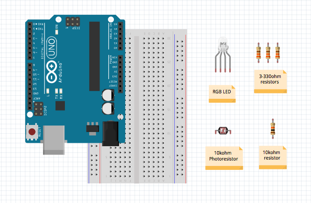
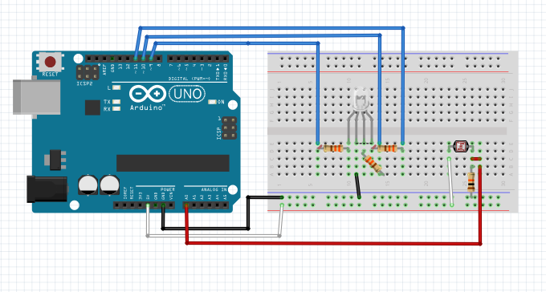
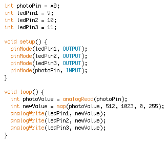

Dim the LightsCreate your own lamp to save electricity by only turning on when it's dark out.

Materials
Arduino Uno
Breadboard and wires
Common Cathode RGB LED
10 kohm photoresistor
3-330 ohm resistors
1-10 kohm resistor
Breadboard Layout
Photoresistor to breadboard: For this project, we're going to be using analog components, which means we need to use the analog input pins and the PWM output pins. Connect the photoresistor from the 5V power pin on the Arduino to the 10k resistor and then to ground. Connect a wire from in between the two resistors to an analog pin - we used A0.
RGB LED (common cathode): Check the datasheet on your RGB LED to see if it's common anode or common cathode. If it's common cathode, the long leg will connect to ground. Connect the PWM pins 9-11 to the resistors and then to the different colored legs on the LED. Each leg is basically its own LED, so each needs its own resistor.
RGB LED (common anode): If your LED is common anode, that means the long leg goes to power instead of ground. You'll hook it into the 5V pin on the Arduino and then hook the legs through resistors to PWM pins 9-11. This tutorial is written for common cathode LEDs just because using common anode makes the code a little backwards, but you can definitely use it if you want to experiment.
You're done! Plug your Arduino into the USB port on your computer.


Software
Getting started: Create a new sketch and initalize variables to store your photoresistor and LED pins. Remember, when you're using analog pins, you have to declare int photoPin = A0 instead of just 0.
Setup: In your first required method, set your LEDs to be output and your photoresistor to be input.
Read photoresistor input: The analog pin will read the voltage in between the photoresistor and the normal resistor. Since photoresistance increases with more light, the reading will go down in bright light and up in darkness. What we need to do is convert our analog reading into a value for the LED. Start by storing the anaog value: int photoValue = analogRead(photoPin).
Interpreting read value: The photoresistor and the normal resistor create what's called a voltage divider.Basically, when the photoresistor is at its maximum resistance, the voltage will split and drop half across each resistor. When it's at the minumum, all the voltage will drop across the normal resistor. AnalogRead has the capacity to output a value between 0 (no voltage) and 1023 (max voltage). For this program, though, it will be confined to output between 512 (half voltage, when the photoresistor is completely on) and 1023 (max voltage, when the photoresistor is completely off).
Convert read value to output: While analogRead will give us a value between 512 and 1023, analogWrite only outputs a value from 0 to 255. We'll use the map function to convert this value. Map takes a lot of arguments: value, fromLow, fromHigh, toLow, toHigh. For this program, we'll use int newValue = map(photoValue, 0, 1023, 0, 255) to convert to the correct range.
Output to LED: Now all you have to do is analogWrite(ledPin, newValue) to get your LED to turn up in dim places! If you want a pure white light, output the same value to each pin. For purely red, green, or blue, you can output to only one pin at once. Try mixing colors or giving different pins different strengths!
Running the program: Once your program is uploaded, try covering the photoresistor with your finger to see if it works correctly. You can leave your breadboard out for a nightlight or just impress your friends.
Experiment: The most obvious extension is to try mixing colors on your RGB LED. You can try other things as well, such as adding a switch so the light isn't always on, changing the value with a potentiometer instead of a photoresistor, or switching your program so it gets brighter as light increases instead of decreases.